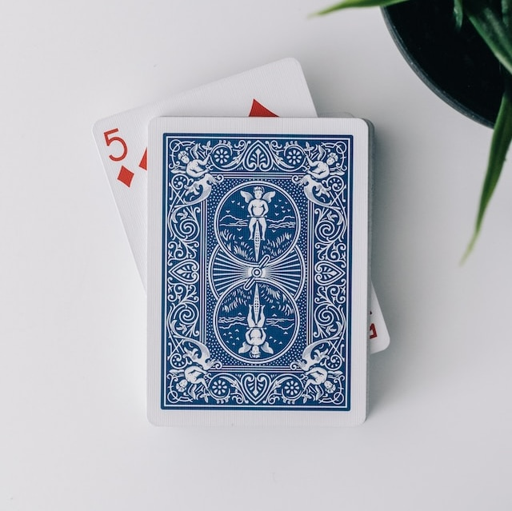

Magic, for me, is not just a hobby; it's a captivating journey into the realm of wonder and mystery. The art of sleight of hand, in particular, is like choreographing a dance between reality and illusion. The delicate movements of fingers become a secret language, weaving spells that leave onlookers in awe.
Inspirations in magic play a pivotal role in shaping my own magical path. David Blaine, with his street magic and fearless approach, is a beacon of inspiration. His ability to blend magic with an almost surreal endurance adds a unique flavor to the art. It's not just about tricks; it's about pushing boundaries and challenging perceptions.
Derren Brown, on the other hand, is a master of psychological illusion. His mind-bending feats and intricate understanding of human behavior bring a cerebral element to magic that I find utterly fascinating. It's like witnessing the magic of the mind itself, a reminder that illusions can be as much about perception as they are about the physical.
Magic, as an inspiring genre, transcends mere trickery. It's about crafting moments of sheer astonishment and transporting people to a place where logic takes a back seat. The gasps, the wide-eyed stares – these are the treasures of a magician. It's not just about fooling the eyes; it's about sparking that childlike sense of wonder that resides in everyone.
Every sleight of hand becomes a silent conversation between the magician and the audience, a dance of deception that is both art and craft. The journey into magic is a continual quest for that perfect illusion, the one that leaves spectators questioning the very fabric of reality.
As I delve into the world of magic, guided by the spirits of Blaine and Brown, I find myself not just performing tricks but orchestrating experiences. It's about connecting with people on a level where disbelief is suspended, and for a brief moment, the impossible becomes possible. And in that moment, I feel the true magic – the inspiration to keep refining my skills, crafting new illusions, and perpetuating the enchantment that drew me into this mesmerizing world in the first place.
GuitarProgrammingMagic